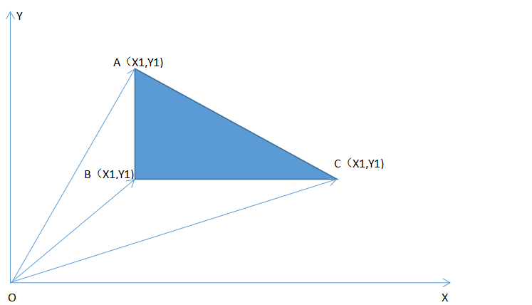

2036 改革春风吹满地
一、题目
问题描述
“ 改革春风吹满地, 不会AC没关系; 实在不行回老家， 还有一亩三分地。 谢谢!（乐队奏乐）”
话说部分学生心态极好，每天就知道游戏，这次考试如此简单的题目，也是云里雾里，而且，还竟然来这么几句打油诗。 好呀，老师的责任就是帮你解决问题，既然想种田，那就分你一块。 这块田位于浙江省温州市苍南县灵溪镇林家铺子村，多边形形状的一块地，原本是linle 的，现在就准备送给你了。不过，任何事情都没有那么简单，你必须首先告诉我这块地到底有多少面积，如果回答正确才能真正得到这块地。 发愁了吧？就是要让你知道，种地也是需要AC知识的！以后还是好好练吧...
输入数据
输入数据包含多个测试实例，每个测试实例占一行，每行的开始是一个整数n(3<=n<=100)，它表示多边形的边数（当然也是顶点数），然后是按照逆时针顺序给出的n个顶点的坐标（x1, y1, x2, y2... xn, yn）,为了简化问题，这里的所有坐标都用整数表示。 输入数据中所有的整数都在32位整数范围内，n=0表示数据的结束，不做处理。
输出数据
对于每个测试实例，请输出对应的多边形面积，结果精确到小数点后一位小数。 每个实例的输出占一行。
输入样例
3 0 0 1 0 0 1
4 1 0 0 1 -1 0 0 -1
0
输出样例
0.5
2.0
题目来源
解题思路
此题是一道计算面积的问题。由于输入的是各点的坐标，故我们可以通过向量方法去计算多边形的面积。不妨先拿最简单的三角形举例。如图所示求三角形ABC的面积的问题，就转化为了求三角形OAB,OBC,OAC的面积的问题。而这三个三角形的面积，很容易使用向量法求解。
S△ABC=-S△OAB-S△OBC+S△OAC=(X1Y2-X2Y1)+(X2Y3-X3Y2)+(X3Y1-X1Y3)。
以此类推,当图形为n边形时，
|S|=(X1Y2-X2Y1)+(X2Y3-X3Y2)+···+(Xn-1Yn-XnYn-1）+(XnY1-X1Yn)。

参考程序
#include<stdio.h>
#include<math.h>
int main()
{
int n,x[100],y[100];
double S;
while(scanf("%d",&n)&&n)
{
S=0;
for(int i=0; i<n; i++)
{
scanf("%d",&x[i]);
scanf("%d",&y[i]);
}
for(int i=0; i<n-1; i++)//向量方法计算多边形的面积
{
S=S+x[i]*y[i+1]-x[i+1]*y[i];
}
S=S+x[n-1]*y[0]-x[0]*y[n-1];
S=S/2;
printf("%.1lf\n",fabs(S));//输出的是绝对值
}
return 0;
}
复杂度分析
复杂度为O（n）。
编程技巧
（1）使用循环一次计算各个向量三角形的面积，当值为负时，表示减去该三角形面积，当值为正时，表示加上该三角形面积。故此公式既适用于凸多边形，也适用于凹多边形。
（2）注意当输入n为0时，程序结束。
（3）注意输出的是S的绝对值。